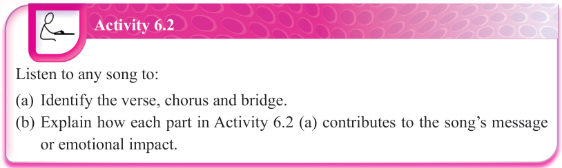
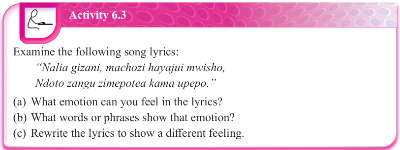
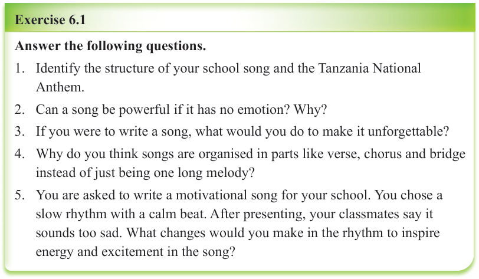

Activity 6.2
Listen to any song to:
(a) Identify the verse, chorus and bridge.
(b) Explain how each part in Activity 6.2 (a) contributes to the song’s message or emotional impact.

Activity 6.3
Examine the following song lyrics:
(a) What emotion can you feel in the lyrics?
(b) What words or phrases show that emotion?
(c) Rewrite the lyrics to show a different feeling.

Exercise 6.1
Answer the following questions.
1. Identify the structure of your school song and the Tanzania National Anthem.
2. Can a song be powerful if it has no emotion? Why?
3. If you were to write a song, what would you do to make it unforgettable?
4. Why do you think songs are organised in parts like verse, chorus and bridge instead of just being one long melody?
5. You are asked to write a motivational song for your school.
You chose a slow rhythm with a calm beat.
After presenting, your classmates say it sounds too sad.
What changes would you make in the rhythm to inspire energy and excitement in the song?
Essential processes involved in songwriting
Songwriting is a creative activity that combines inspiration, feelings and musical skills to make songs that connect with people. Understanding the essential steps in writing a song can make the process clearer and more organised. Every step